Effet d'un champ électrique sur la structure et la dynamique de suspensions colloïdales confinées : étude numérique par simulation
Salomon Chung, PLMC (UPEC)
- Introduction : motivation et modèle
- Propriétés d'équilibre en faible confinement
- Propriétés dynamiques dont les temps caractéristiques d'inversion de population
- Conclusion et perspectives
Introduction
Colloïdes
- Dispersion de macroparticules dans un milieu porteur.
- Taille : du nanomètre au micromètre.
- Large gamme d'échelle de longueur et de temps.
Objets supramoléculaires : propriétés particulières
|
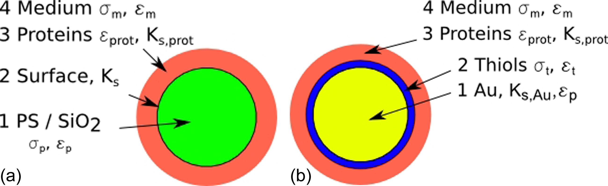
|
Contexte de ce travail
- Continuité des travaux antérieurs de l'équipe : tenter de dégager les paramètres pertinents et les tendances générales (généricité vs. spécificité) → guide pour l'expérience et les applications.
- Sujet précis : colloïdes confinés sous un champ extérieur. Possibilité d'inversion de population dans un mélange (C. Brunet, 2009, PLMC), résultats jugés suffisamment importants pour être développés.
Pourquoi un mélange confiné sous champ ?

|
|
Avec quel modèle l'étudier ?
- Mélange binaire de sphères dipolaires (SD) et apolaires (SA), dont les interactions à courte portée sont purement répulsives (simplification) et à diamètres non-additifs (la non-additivité positive ($\delta > 0$) favorise la démixtion et donc des effets à champ faible).
- Pas de solvant explicite ($\epsilon_\text{eff}$, $\gamma$).
- Géométrie de confinement : pore fente (deux murs parallèles sans structure) ou pore de taille finie avec interface explicite avec la phase volumique (dynamique).
- Champ extérieur : soit un champ uniforme normal ou parallèle aux parois (pore-fente), soit un champ normal localisé (pour les études en DM).
| 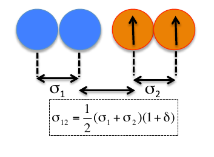 |

|
Pour la DM : assouplissement de l'interaction dure → potentiel mou (e.g. WCA).
Objectifs
- Approfondir l'étude des propriétés d'équilibre du fluide confiné dans un pore-fente : éclairage supplémentaire (confinement moindre, effets dipolaires plus intenses).
- Etude de la dynamique des effets de champ : transition entre 2 états d'équilibre, temps caractéristique, etc. en prenant une géométrie réaliste (interface pore / réservoir).
sphères dures + dipôles (non additifs), confinement et champ extérieur : ingrédients essentiels.
Ce modèle pourrait sembler particulier :
- à l'échelle moléculaire : probablement
- à l'échelle supramoléculaire : peut-être pas
Ce modèle minimaliste peut être réalisé avec des colloïdes stabilisés stériquement (ou à des colloïdes chargés ayant une très courte longueur d'écrantage).
Dipôles électriques (induits)
- Différence de polarisabilité (contraste diélectrique particule - solvant, e.g. $\epsilon_2 \gg \epsilon_1 \simeq \epsilon$)
- Non-additivité ($\delta$) faisable dans le cadre de la stabilisation stérique (e.g. interpénétration des couches superficielles polymériques)

|
Honegger, Peyrade, Biomicrofluidics 6, 044115, (2012)
donnent le facteur de Clausius-Mossotti $\Re[CMF(\omega)]$ |
Dipôles magnétiques (permanents)
Nombreuses études dans la littérature : séparation de phase induite par champ, « cristaux photoniques », etc.


Confinement
En laboratoire
Gong et at., Langmuir 18, 10064, (2002), Langmuir 17, 2301, (2001)| 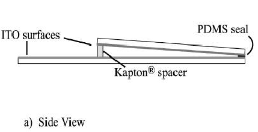 |

|
Pour des applications : matériaux poreux
-
Silice poreuse :
T. Sen et al., Chem. Mater. 16, 2044, (2004)

-
Matrice organométallique :
J. L. C. Rowsell, O. M. Yaghi,
Microporous and Mesoporous Materials 73, 3, (2004) :
- large pore sizes, high apparent surface areas
- selective uptake of small molecules
- optical or magnetic responses to the inclusion of guests
- potential for directed tailoring of these properties

Méthodes d'étude
- Complexité du modèle : problèmes avec les méthodes analytiques
- Système à l'équilibre : Monte-Carlo (développé en interne)
- Système hors équilibre : code de dynamique moléculaire parallélisé spécialisé dans les interactions dipolaires ($\espresso{}$) : algorithmes efficaces pour les sommes d'Ewald
Effet d'un champ sur un mélange confiné de sphères dipolaires et
apolaires :
propriétés à l'équilibre
Modèle
Géométrie : Fluide dans un pore fente infini (CLP selon $x, y$)
| 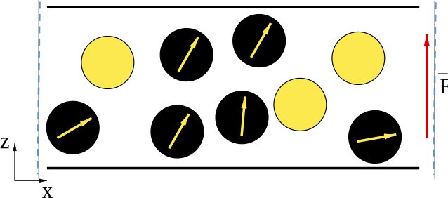 |
|
|
Interaction à courte portée
|
Interactions dipolaires et champ extérieur
|
Etude par simulation Monte-Carlo (canonique et GEMC)
($\ct{N}_\mathrm{\ds} = 1330 \text{ à } 4786$)
Equilibres de phases
Courbes de coexistence obtenues par GEMC
|
bulk : pour différents $\nonAdditivity$ 
La non-additivité favorise la démixtion. Choix : $\delta = 0,05$ |
slab 
Les murs stabilisent le mélange. Etats marqués par des croix : étude de l'effet du champ à ces densités |
Champ nul
$\SMdensity = 0,35$ et $\SMdensity = 0,47$

|

|
"démouillage" des murs par les dipôles |
$\SMdensity = 0,64$ : phases riche et pauvre en dipôles

|

|
|
Champ perpendiculaire
$\SMdensity = 0,64$, $\field^\ast = 0,8$ et $\field^\ast = 0,90$

|

|
|

|

|
|
Champ parallèle
$\SMdensity = 0.47$, $\field_\parallel^\ast = 0,18$

|

|
|
Et en canonique ?

|
|
Conclusion
- Le confinement et le champ perpendiculaire stabilisent le mélange.
- Le champ parallèle induit une séparation de phase.
- Ces 2 directions du champ induisent une structuration et/ou une ségrégation au voisinage de la surface.
Dans la suite de l'étude, nous considérons uniquement des champs perpendiculaires parce qu'ils peuvent conduire à des cycles réversibles d'allumage et d'extinction du champ.
Effet d'un champ sur un mélange confiné de sphères dipolaires et apolaires : aspects dynamiques
Motivation
Pour certaines applications, l'évolution temporelle est le but principal (e.g. "affichage", réponse à un champ modulé).
Plan
- Structures initiale et finale
- Dynamique : cycles réversible et irréversible
- Rôle de la taille des particules et loi d'échelle
Modèle : géométrie et champ
|
Géométrie de confinement 
Interface entre le réservoir de particules et le milieu confiné. |
Champ extérieur 
|
Modèle : interactions
Potentiel d'interaction à courte portée
|
|
|
Interactions dipolaires
$u(\vec{r}_\ct{ij}, \vec{\dip}_\ct{i}, \vec{\dip}_\ct{j}) = \frac{1}{4 \pi \permittivity_\text{eff}} \left[ \frac{\vec{\dip}_\ct{i} \cdot \vec{\dip}_\ct{j}}{r_\ct{ij}^3} - 3 \frac{(\vec{\dip}_\ct{i} \cdot \vec{r}_\ct{ij}) (\vec{r}_\ct{ij} \cdot \vec{\dip}_\ct{j})}{r_\ct{ij}^5} \right]$Profils de densité dans la région centrale du pore à champ nul
$\SMdensity^\ast = 0,41$; $\SMcomposition = 0,05$; $\ct{N}_\mathrm{\ds} = 718$; $\ct{N}_\mathrm{\as} = 13637$

Sphères dipolaires (SD) |

Sphères apolaires (SA) |
- Population "normale" : $\SMdensity_\mathrm{\ds}^\mathrm{slab} \simeq \SMdensity_\mathrm{\ds}^\mathrm{bulk} \ll \SMdensity_\mathrm{\as}^\mathrm{slab} \simeq \SMdensity_\mathrm{\as}^\mathrm{bulk}$.
- Accord MC / MD : système monophasique à l'équilibre
Profils de densité dans la région centrale du pore après allumage du champ

cercles vides : SD, cercles pleins : SA |
|
Cycle de champ réversible :

|
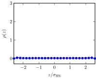
profil de densité des dipôles |
$\chargeDensity^\ast = 0$

|
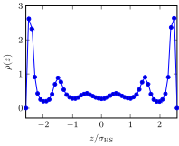
profil de densité des dipôles |
$\chargeDensity^\ast = 0 \to 14,3$

|
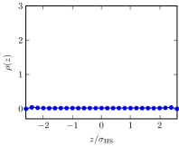
profil de densité des dipôles |
$\chargeDensity^\ast = 0 \to 14,3 \to 0$
Dynamique de l'inversion de population sous champ

|
|
Echelle de temps : $\unitTime = \unitLength \sqrt{\unitMass / \unitEnergy} = 2,55e-5 \mathrm{s}$
Loi d'échelle en fonction de coefficient de frottement réduit et champs croissants

|

Champs croissants : saturation prématurée |
Cycles irréversibles
$\frictionCoefficient^\ast = 0,046$ (pour accélérer les simulations)
|
$\SMcomposition = 0,1$; $\SMdensity^\ast = 0,6$ 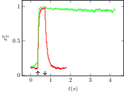 |
|

|
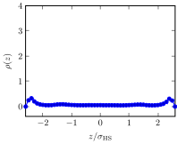 |
$\chargeDensity^\ast = 0$
| 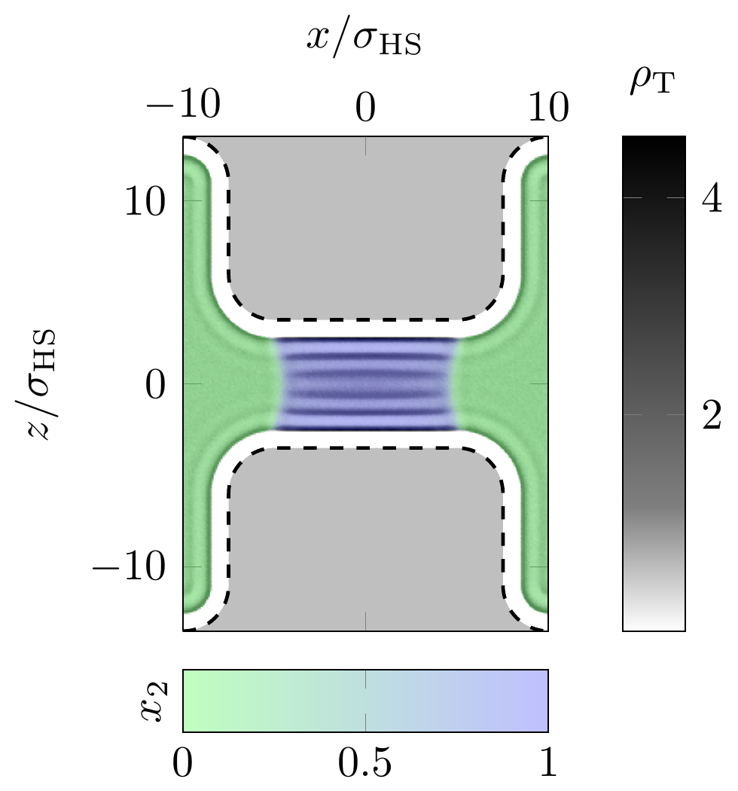 | 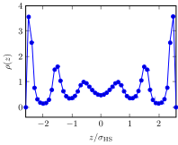 |
$\chargeDensity^\ast = 0 \to 7,15$
| 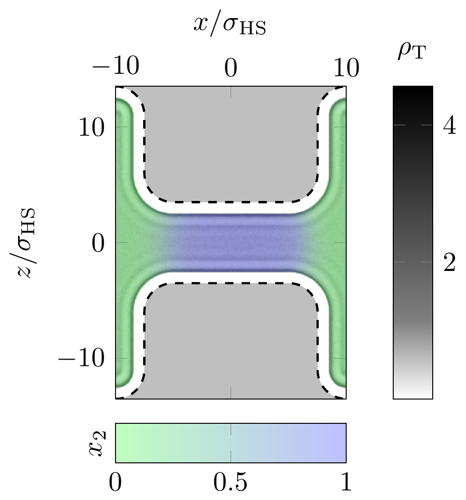 | 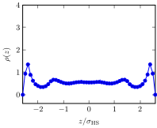 |
$\chargeDensity^\ast = 0 \to 7,15 \to 0$
Cycles irréversibles intermédiaires
$\SMdensity^\ast = 0.52$; $\SMcomposition = 0, 1$; $\delta = 0,2$
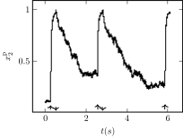Après extinction du champ : état métastable.
Estimation de $t_\text{cycle}$
- Comportement linéaire en $\frictionCoefficient^\ast$, coefficient de frottement réduit : $\frictionCoefficient^\ast = \frictionCoefficient \unitTime / \unitMass$, $\frictionCoefficient = 3\pi \unitLength \dynamicViscosity$ (à dilution infinie...)
- Echelle de temps newtonnienne : $\unitTime = \unitLength \sqrt{\unitMass / \unitEnergy}$; $\unitMass \propto \unitLength^3$
- La loi d'échelle en fonction de la taille $\unitLength$ est déterminée par $\unitEnergy$ du potentiel WCA.
- Nécessité d'un modèle microscopique pour l'interaction (répulsive) entre colloïdes : répulsion en $1/r^{12}$ distribuée uniformément dans une sphère de diamètre $\unitLength$. $\epsilon(\unitLength)$ déduit de $\phi_\mathrm{ss}$ via l'équivalence du second coefficient du viriel $\secondVirial$ pour $u_\mathrm{WCA}$.
Rôle de la taille des particules et loi d'échelle
| 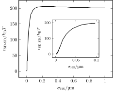 |
2 régimes :
|
$t_\text{cycle}$ varie sur plusieurs ordres de grandeur en fonction de $\unitLength$ : marge sur les temps de réponse en fonction des applications envisagées.
Conclusion
Modèle de mélange de colloïdes confiné (une espèce pouvant être couplée à un champ)- Approfondissement de l'étude des propriétés d'équilibre dans un pore large. Selon la direction du champ : mouillage, démouillage, structuration, séparation de phase, etc.
- Le confinement et le champ perpendiculaire stabilisent le mélange, à l'opposé du champ parallèle.
-
En ce qui concerne la dynamique de
l'inversion de population dans un pore étroit en contact avec
un réservoir (uniquement en champ normal) :
- adaptation du modèle (interface explicite, champ non-uniforme, etc.).
-
Selon l'état thermodynamique :
- Cycle allumage extinction réversibles : étude de l'influence sur la durée des cycles $t_\text{cycle}$ de remplissage/vidage de différents paramètres (intensité du champ, densité et composition). Conclusion principale : $t_\text{cycle}$ linéaire en coefficient de frottement réduit. Sur cette base et un modèle pour l'interaction répulsive sphère-sphère, une loi d'échelle établie en fonction de la taille des particules : de l'ordre de 25 min à 0,03 s en passant du micromètre au nanomètre.
- Cycle irrréversibles ou intermédiaires : soit la phase riche est sélectionnée par le champ puis persiste après extinction, soit retour vers une densité intermédiaire métastable, mais cycle globalement reproductible.
Perspectives
-
Etude du pore large à l'équilibre :
- Dynamique de transition : durée de la structuration, relaxation.
- Caractérisation des mésostructures : formes, persistance.
- Pore large ou étroit : étudier plus précisément les plus grands coefficients de frottement (comportement de $t_\text{cycle}$ linéaire ?).
-
Dynamique de l'inversion de population dans d'autres systèmes :
- Echelle des colloïdes : prise en compte des interactions hydrodynamiques, particules chargées ?, structures plus réalistes de la particule colloïdale (→ expérience).
- Echelle du fluide moléculaire : au-delà des interactions purement répulsives, confinement à l'échelle moléculaire.
Méthodes de simulation
Introduction
- Objectif : étude d'un système comportant un grand nombre de particules en interactions
- Fondement théorique : mécanique statistique
- Mise en œuvre : simulations numériques
Méthodes de simulation
- Modélisation et calcul des interactions
- Evolution à partir d'un état initial
- Reproductibilité des résultats
Monte-Carlo Metropolis
Echantillionnage préférentiel
- $p(x)$ densité de probabilité de la configuration $x$ : $$\langle a \rangle_p = \int \dif{x}\ p(x) a(x)$$
- $x_1, ..., x_\ct{M}$ configurations pondérés et $\ct{M} \to \infty$ : $$\frac{1}{\ct{M}} \sum_{\ct{i}=1}^\ct{M} a(x_\ct{i}) \longrightarrow \langle a \rangle_p$$
Monte-Carlo Metropolis
Algorithm de Metropolis
$A[x \to y]$ probabilité d'acceptation :
if (acceptation_probability < 1.) then
call random_number(rand)
if (rand < acceptation_probability) then
success = .true.
else
success = .false.
end if
else
success = .true.
end if
Dynamique moléculaire
Verlet vitesse :

|
|
$$\vec{x}(t+\Delta t) = \vec{x}(t) + \Delta t \ddrt{x(t)}{t} + \frac{\Delta t^2}{2} \ddrt[2]{x(t)}{t}$$ $$\vec{v}(t + \Delta t) = \vec{v}(t) + \frac{\Delta t}{2m} \left( \vec{F}(t) + \vec{F}(t + \Delta t) \right)$$
Dynamique de Langevin
\[ m \ddrt{\vec{v}(t)}{t} = -\frictionCoefficient \vec{v}(t) + \vec{\randomForce}(t) + \vec{F}_\text{ext} \]-
Un théorème de fluctuation-dissipation relie :
- $\frictionCoefficient$ : le coefficient de frottement (macroscopique)
- $\vec{\randomForce}$ : la force aléatoire (microscopique)
Loi de Stokes pour une sphère de diamètre $\diameter$ : $\frictionCoefficient = 3\pi \dynamicViscosity \diameter$.